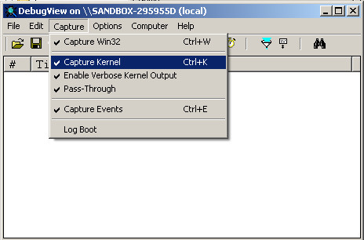
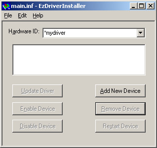
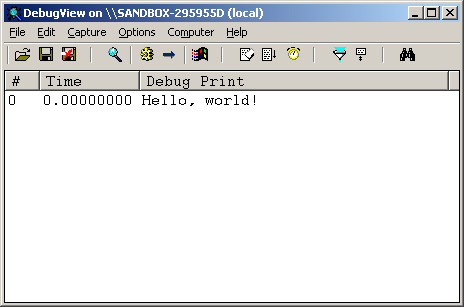
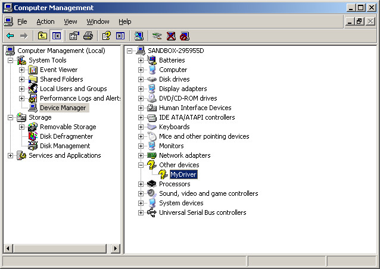
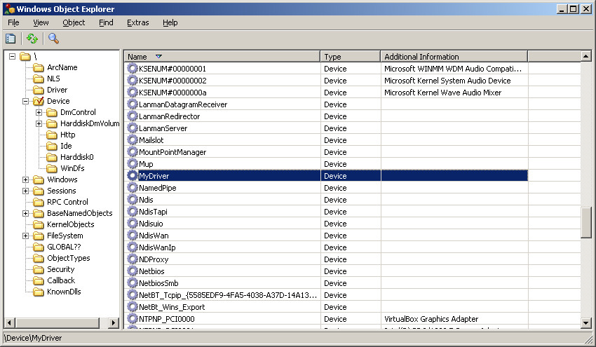

Steward
分享是一種喜悅、更是一種幸福
驅動程式 - Windows Driver Model (WDM) - 使用範例 - BASIC (FreeBASIC) - Hello, world!
參考資訊：
https://wasm.in/
http://four-f.narod.ru/
https://github.com/steward-fu/ddk
main.bas
#include "wdm.bi"
declare function DriverEntry stdcall alias "DriverEntry" (byval pMyDriver as PDRIVER_OBJECT, byval pMyRegistry as PUNICODE_STRING) as NTSTATUS
dim shared pNextDevice as PDEVICE_OBJECT = Null
function AddDevice(byval pMyDriver as PDRIVER_OBJECT, byval pPhyDevice as PDEVICE_OBJECT) as NTSTATUS
dim usDriverName as UNICODE_STRING
dim pMyDevice as PDEVICE_OBJECT = null
dim status as NTSTATUS = STATUS_SUCCESS
RtlInitUnicodeString(@usDriverName, @wstr("\Device\MyDriver"))
status = IoCreateDevice(pMyDriver, 0, @usDriverName, FILE_DEVICE_UNKNOWN, 0, FALSE, @pMyDevice)
pNextDevice = IoAttachDeviceToDeviceStack(pMyDevice, pPhyDevice)
(*pMyDevice).Flags = (*pMyDevice).Flags and (not DO_DEVICE_INITIALIZING)
(*pMyDevice).Flags = (*pMyDevice).Flags or DO_BUFFERED_IO
return STATUS_SUCCESS
end function
function IrpDispatch(byval pMyDevice as PDEVICE_OBJECT, byval pIrp as PIRP) as NTSTATUS
dim pStack as PIO_STACK_LOCATION
pStack = IoGetCurrentIrpStackLocation(pIrp)
If (*pStack).MinorFunction = IRP_MN_REMOVE_DEVICE then
IoDetachDevice(pNextDevice)
IoDeleteDevice(pMyDevice)
IoCompleteRequest(pIrp, IO_NO_INCREMENT)
return STATUS_SUCCESS
End If
IoSkipCurrentIrpStackLocation(pIrp)
return IoCallDriver(pNextDevice, pIrp)
end function
sub Unload(byval pMyDriver as PDRIVER_OBJECT)
end sub
function DriverEntry(byval pMyDriver as PDRIVER_OBJECT, byval pMyRegistry as PUNICODE_STRING) as NTSTATUS
DbgPrint(@!"Hello, world!")
(*pMyDriver).DriverUnload = @Unload
(*pMyDriver).MajorFunction(IRP_MJ_PNP) = @IrpDispatch
(*(*pMyDriver).DriverExtension).AddDevice = @AddDevice
return STATUS_SUCCESS
end function
L39~44：只有做Callback設定的動作，需要設定AddDevice、PNP、DriverUnload這三個Callback
L08~17：產生一個Device Object，用來管理新加入的裝置(純軟體虛擬裝置也算)，接著初使化相關旗標
L21~32：主要處理移除Device Object的動作，其餘Irp不處理，直接往下傳遞
main.inf
[Version] Signature=$CHICAGO$ Class=Unknown Provider=%MFGNAME% DriverVer=8/21/2019,1.0.0.0 [Manufacturer] %MFGNAME%=DeviceList [DeviceList] %DESCRIPTION%=DriverInstall, *MyDriver [DestinationDirs] DefaultDestDir=10,System32\Drivers [SourceDisksFiles] main.sys=1,,, [SourceDisksNames] 1=%INSTDISK%,,, [DriverInstall.NT] CopyFiles=DriverCopyFiles [DriverCopyFiles] main.sys,,,2 [DriverInstall.NT.Services] AddService=FILEIO,2,DriverService [DriverService] ServiceType=1 StartType=3 ErrorControl=1 ServiceBinary=%10%\system32\drivers\main.sys [DriverInstall.NT.HW] AddReg=DriverHwAddReg [DriverHwAddReg] HKR,,SampleInfo,,"" [DriverInstall] AddReg=DriverAddReg CopyFiles=DriverCopyFiles [DriverAddReg] HKR,,DevLoader,,*ntkern HKR,,NTMPDriver,,main.sys [DriverInstall.HW] AddReg=DriverHwAddReg [Strings] MFGNAME="MyDriver" INSTDISK="MyDriver Disc" DESCRIPTION="MyDriver"
編譯
"c:\freebasic\fbc32.exe" -c main.bas "c:\masm32\bin\link.exe" main.o /driver /base:0x10000 /subsystem:native /entry:DriverEntry "c:\masm32\lib\wxp\i386\ntoskrnl.lib" "c:\masm32\lib\wxp\i386\csq.lib" /OUT:main.sys
在開始安裝驅動程式之前，需要先下載除錯工具，讓驅動程式的Debug訊息可以顯示在除錯工具上面，目前最佳的Debug輸出訊息工具是DbgView，該公司目前已經被Microsoft併購，所以可以從Microsoft網站下載，下載完後執行DbgView並將Capture => Capture Kernel選項打勾，接著重啟DbgView

對於驅動程式的安裝工具，司徒目前使用NuMega公司製作的EzDriverInstaller，將main.sys和main.inf放在同一個目錄並執行EzDriverInstaller，選擇File => Open...(開啟main.inf檔案)，接著按Add New Device就可以在DbgView上面看到輸出訊息


Device Manager

Device Object
